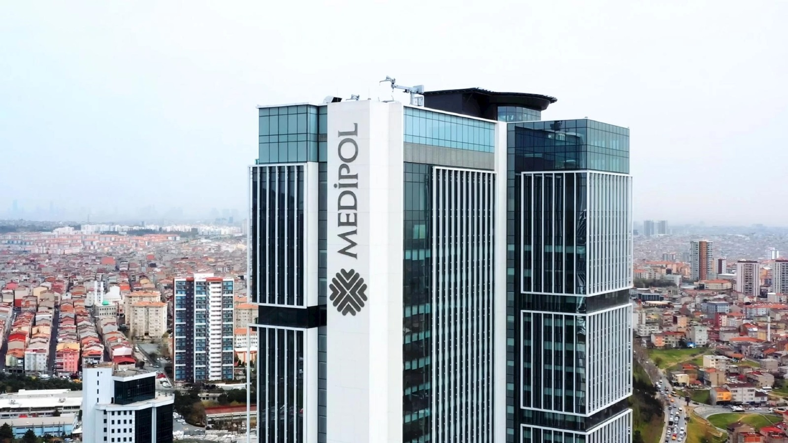
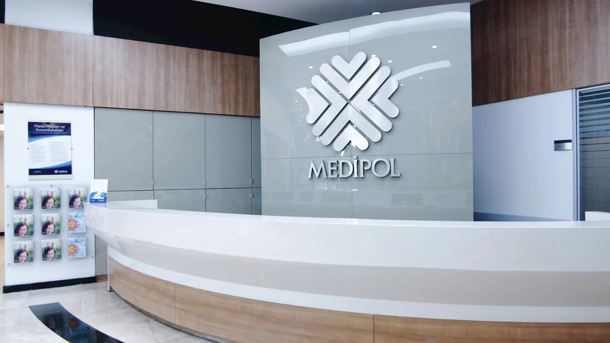
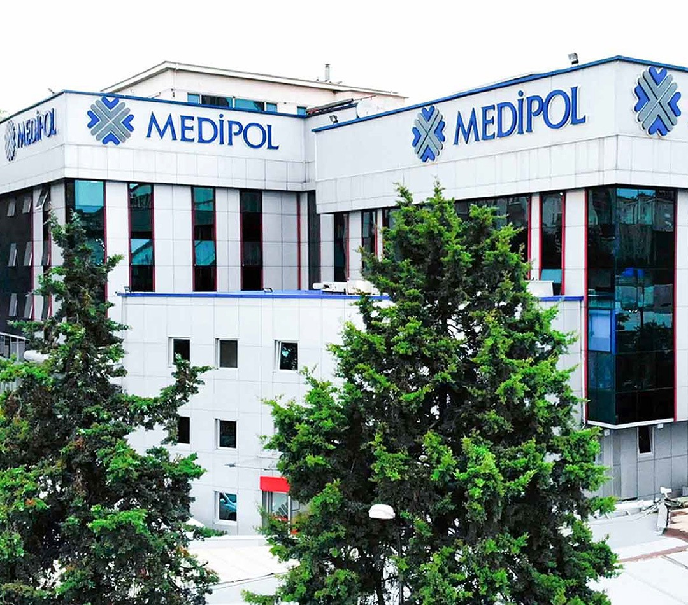
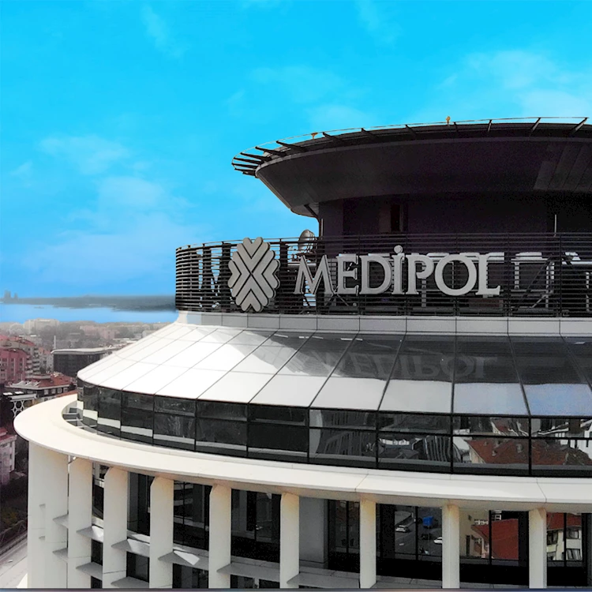

HAKKIMIZDA
2024 yılında Malatya’da hizmet vermeye başlayan hastanemiz, daima büyüyen, yenilikçi uzman kadrosu ve ileri teknoloji desteğiyle tüm branşlarda özenli, güvenli ve yüksek standartlı hizmet veren çağdaş bir sağlık merkezidir. Değişen yaşam koşullarına adapte olan hastanemiz ileri tıp teknolojisini, tüm kadronun sadakatle benimsediği ‘üstün hizmet anlayışı’ ilkesi ile birleştirmiştir. Bugün sektörde norm olarak kabul edilen ve yenilikleri süratle uygulayan ‘ULUSLARARASI SAĞLIK TURİZMİ YETKİ BELGESİ’ ve ‘BEBEK DOSTU HASTANE‘ unvanını kazanmış özel sağlık kuruluşları arasındadır. 12 hekim kadrosu, 7 yeni doğan yoğun bakım, 7 genel yoğun bakım, 4 koroner yoğun bakım, 6 KVC yoğun bakım, toplamda 91 yatak kapasitesiyle 10 branşta poliklinik hizmeti vermektedir.Tüm tetkikleri yapabildiğimiz tam donanımlı laboratuvarın yanı sıra, radyoloji ünitemiz, MR, tomografi, röntgen, mamografi, ultrason gibi cihazlarla hastalarımızın tüm ihtiyaçlarına cevap verilmekteyiz. Birikim, beceri, özveri ve insanımıza duyduğumuz saygıyı rehber edinen Özel Büyükşehir Hastanesi daima yanınızda.

AMACIMIZ
Hastanemizde hastalarımızın rahat etmesi için her şey eksiksiz ve kusursuz planlanmıştır. Amacımız; etik değerleri ve meslek ahlakını temel alan alanında uzman, tecrübeli ve güler yüzlü ekibimizle, huzurlu bir ortamda, uluslararası kalite standartlarında en ekonomik sağlık hizmetini sunmaktır.

VİZYONUMUZ
En ileri teknolojilerin tümünün kullanıldığı, çağdaşlığı temel alarak kurumsal gelişimin sağlandığı, başarılı faaliyetleriyle ilk tercih edilen referans hastanelerden biri olmaktır.

MİSYONUMUZ
Uzmanlaştığımız sağlık hizmetlerinde hasta ve uzman ekibimizin güvenliğini ön planda tutarak, sürekli yenilik ve gelişimi benimsiyoruz. Tüm hastalarımız için yaşam kalitesini artırmak amacıyla uluslararası standartlarda hizmet sunuyoruz.

DEĞERLERİMİZ
- İnsan değerlerine önem veriyoruz.
- Odak noktamız hastalarımız ve çalışanlarımızdır.
- Güvenilirlik temel prensibimizdir.
- Sahip olduğumuz etik değerlerimizle örnek gösteriliriz.
- Sürekli gelişime inanırız.
- Emeğe saygı duyarız.
- Başarılı, kendi alanlarında uzman, azimli ekibe sahibiz.